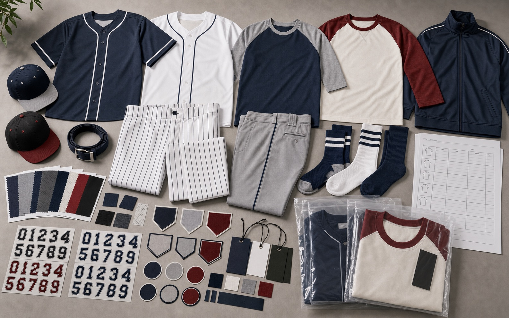

Jerseys, Pants, and Team Sets
- Button-front jerseys, raglan tops, pinstripe pants, training tees, warm-up layers, and full team sets
- Sublimation, twill patches, embroidery, heat transfer, piping, and contrast collar details
- Men, women, youth, school, league, tournament, and fan merchandise sizing